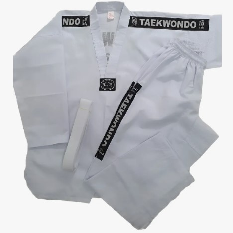
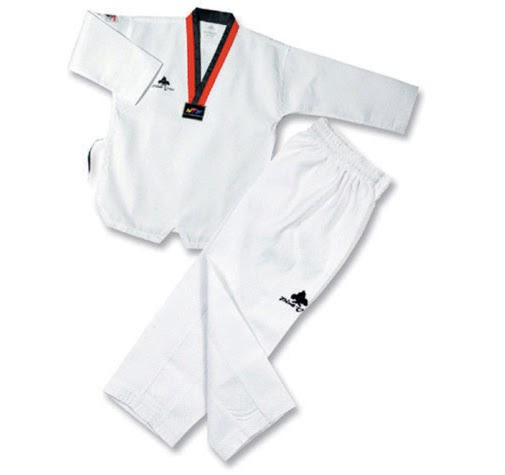
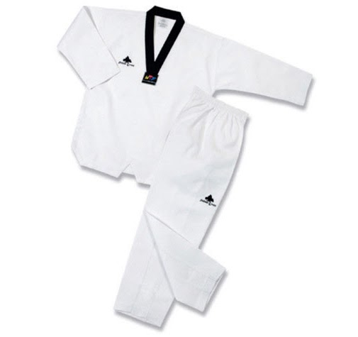
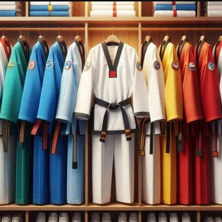
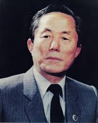
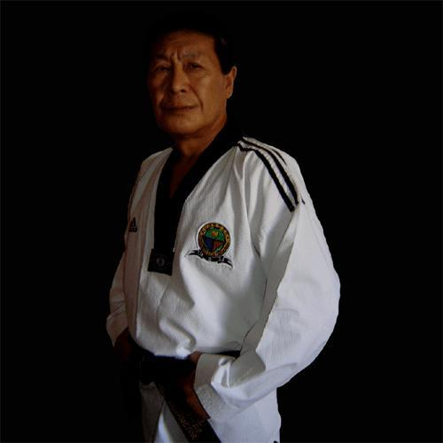

História & Tradição
Conheça as raízes marciais, a filosofia e a trajetória da nossa arte da Coreia ao Brasil.
Ao contrário do que muitos pensam, o Taekwondo — ou Taekwon-Do — é uma arte marcial recente, que começou a ser desenvolvida a partir dos anos 40 após a retirada das tropas de invasão japonesas na Coreia. No entanto, suas raízes estão intimamente ligadas aos mais de 2000 anos de história das artes marciais coreanas tradicionais, como o Taekkyeon, o Subak e o Gwonbeop, além de incorporar elementos técnicos do Karate de Okinawa e do Kung Fu chinês.
Em 1945, logo após o fim da ocupação da Coreia pelo Japão Imperial, novas escolas de artes marciais, chamadas Kwans, foram abertas em Seul por mestres que haviam estudado no exterior. Durante os anos 40 e 50, cada Kwan praticava seu próprio estilo e linhagem técnica. A popularidade da arte cresceu rapidamente quando ela foi adotada para o treinamento compulsório das forças militares sul-coreanas.
Em 1952, após testemunhar uma demonstração militar de alto impacto, o presidente sul-coreano Syngman Rhee exigiu a unificação dos estilos das escolas. No dia 11 de abril de 1955, a banca de mestres e historiadores convocada pelo General Choi Hong Hi retificou a união das linhagens. Inicialmente, operou-se brevemente sob o nome de Tae Soo Do. Posteriormente, o General Choi defendeu com sucesso a substituição definitiva do termo Su por Kwon (punho), oficializando nacionalmente o nome Taekwondo. Em 1965, a associação nacional consolidou-se como Korea Taekwondo Association (KTA).
A Guerra Fria dividiu os rumos políticos da modalidade. Em 1966, o General Choi fundou a Federação Internacional de Taekwondo / ITF. Contudo, devido a tensões políticas e ao exílio do General para o Canadá, o governo da Coreia do Sul retirou o apoio à ITF. Em resposta, o governo sul-coreano estabeleceu o Kukkiwon em 1972 como a Academia Mundial oficial e chancelou a criação da Federação Mundial de Taekwondo / WT em 1973 para promover a modalidade como esporte olímpico. Desde o ano 2000 (Jogos de Sydney), o Taekwondo figura como esporte oficial das Olimpíadas, integrando hoje mais de 100 milhões de praticantes globalmente.
Como uma arte marcial autêntica, o praticante de Taekwondo deve pautar sua conduta diária e técnica por diretrizes éticas rígidas, estruturadas sob um juramento solene e cinco princípios fundamentais que devem ser levados para a vida fora do Dojang.
O Juramento do Praticante
- Observar as regras do Taekwondo;
- Respeitar mestres e meus superiores;
- Nunca fazer mau uso do Taekwondo;
- Ser campeão da liberdade e justiça;
- Construir um mundo mais pacífico.
Os 5 Princípios Fundamentais
백절불굴
O Dobok (도복) é a vestimenta oficial de treino e competição nas artes marciais coreanas, significando literalmente "vestimenta do caminho". Historicamente, os Doboks eram inteiramente brancos para simbolizar a pureza e o patriotismo tradicional coreano. Antigamente, a única alteração visual permitida ocorria na gola, que se tornava preta para os faixas pretas adultos e bicolor (vermelha e preta) para os praticantes de nível avançado menores de idade (Poom).
Com a divisão institucional e a modernização da modalidade, surgiram diferenças marcantes nos cortes dos uniformes:
- Estilo WT (Olímpico): Caracteriza-se por uma blusa fechada com decote em "V", projetada para leveza, agilidade e dinâmica eletrônica de combate esportivo.
- Estilo ITF (Tradicional): Pratica o corte transpassado clássico aberto na frente com fechamento por velcro, muito similar ao formato do Dôgi japonês.
Atualmente, federações modernas e equipes de demonstração utilizam Doboks coloridos em tons de azul, vermelho e preto para apresentações estéticas. No entanto, escolas de linhagem estritamente tradicional vetam essas variações de cor, exigindo o uso exclusivo do Dobok branco para a preservação da disciplina marcial.

Dobok Clássico Branco
Linhagem Tradicional
Dobok Crianças Graduadas
Gola Poom (Infantil Sênior)
Dobok Gola Preta
Graduados Sênior (Adultos)
Dobok de Demonstração
Variações de Cores ModernasA introdução do Taekwondo no Brasil ocorreu em julho de 1970, em um cenário de intensa imigração coreana e sob o reflexo das mudanças políticas na península asiática. Ao contrário do que reza o mito popular, o Grão-Mestre Sang Min Cho chegou ao país como imigrante civil. Para consolidar a prática em solo nacional, ele estabeleceu contatos técnicos e, em 8 de agosto de 1970, fundou oficialmente a primeira escola do país no bairro da Liberdade, em São Paulo: a Academia Liberdade, superando severas barreiras idiomáticas e culturais da época.
Visando o fortalecimento e a expansão da arte marcial pelo território paulista, os Mestres Sang In Kim e Kun Mo Bang chegaram logo em seguida, em 1971. No início dos anos 70, os mestres pioneiros atuaram de forma contratual na instrução de forças de segurança pública e guardas civis para demonstrar a eficiência da defesa pessoal coreana.

General Choi Hong Hi
Idealizador / Pai da Arte (ITF)Sang Min Cho
Introdutor Oficial no Brasil (1970)Sang In Kim
Pioneiro no Sudeste (1971)
Kun Mo Bang
Pioneiro no Sudeste (1971)Em março de 1972, o Grão-Mestre Woo Jae Lee introduziu oficialmente a prática na cidade do Rio de Janeiro. Ele organizou o primeiro Campeonato Carioca em janeiro de 1973 e, em seguida, coordenou o pioneiro Campeonato Brasileiro de Taekwondo no Ginásio do Ibirapuera (SP), em julho daquele ano. Paralelamente, no Nordeste, o ensino sistemático expandiu-se a partir da década de 1970 com o Mestre Jung Do Lim na Bahia, estruturando as primeiras associações reconhecidas.
Com o exílio do General Choi Hong Hi para o Canadá em 1972, o grupo de pioneiros no Brasil tomou a decisão estratégica de migrar os laços institucionais da International Taekwon-Do Federation / ITF para a Korea Taekwondo Association / KTA e, posteriormente, para a World Taekwondo / WT, adotando predominantemente a linha técnica da escola Chang Moo Kwan.
A modalidade ganhou chancela oficial em 31 de janeiro de 1974, quando a Confederação Brasileira de Pugilismo (CBP) integrou o Taekwondo como esporte reconhecido pelo Conselho Nacional de Desportes (C.N.D.). Em 1987, visando a independência administrativa exigida pelo Comitê Olímpico, foi criada a Associação Brasileira de Taekwondo (ABT), posteriormente renomeada para Confederação Brasileira de Taekwondo / CBTKD em 1990, que permanece como o órgão regulador olímpico oficial.
- Enciclopédia do Taekwon-Do de 15 volumes, traduzida (Coreia).